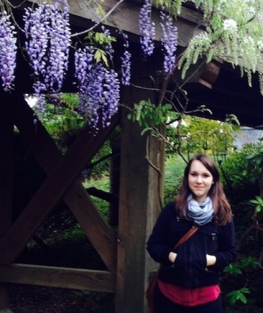

<!-- BEGIN HEADER -->
<header class="grid-container">
    <div class="grid-x grid-padding-x align-middle">

        <div class="card sectionCard">  
            <div class="grid-x grid-padding-x align-middle">
                <!-- HEADER TEXT -->            
                <div class="medium-6 cell">
                    <h1 class="coralText">ABOUT ME</h1>
                    <h2>My brain is 40% questions, 30% cat facts, and the rest is a rotating carousel of UX ideas and soup recipes.</h2>

                    <p>I’m a deeply curious human who spots the unasked questions and translates chaos into clarity. I’m the one who says, “Wait, but why?” until we get it right.
                    <br><br>Outside of work, I’m probably researching weirdly specific things—like heat loss patterns in old houses or the fastest way to soften butter—while planning my dream farm, complete with fruit orchards, friendly animals, and bluebirds harmonizing over a babbling brook.
                    <br><br>I like things that are real, thoughtful, and a little weird—in both products and people. That’s where the good stuff is.</p>
                </div>   

                <div class="medium-6 cell" id="headerImg"></div>
                
            </div>
        </div> 
    </div>
</header> 
<!-- END HEADER-->
